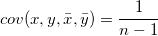
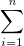
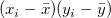

/math-6fbdf291cda891b99cf211417ad1df18.png "\bar{x}") and
and /math-bacfc7141fdfd692244b6c50891d1f7b.png "\bar{y}") their respective means, then the covariance between the two is defined as:
their respective means, then the covariance between the two is defined as:
This function returns the covariance between two datasets. Let X and Y be two datasets and and their respective means, then the covariance between the two is defined as:

double cov(dataset vx, dataset vy[, double avex, double avey])
vx
vy
avex
avey
|
Note: In Origin 92, avex and avey can be omited when setting parameters. Their default values are the average of vx and vy datasets, respectively.
Minimum Origin Version Required: Origin 92 SR0 |
Returns the covariance between two datasets vx and vy.
newbook; range aa = 1!1; range bb = 1!2; aa = uniform(32); bb = uniform(32); covariance = cov(aa,bb); covariance = ;